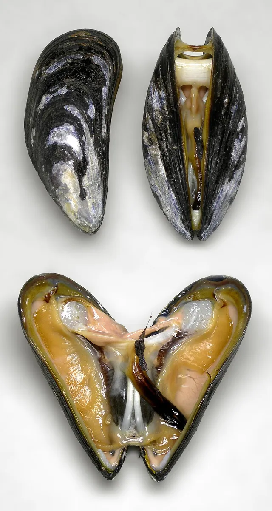
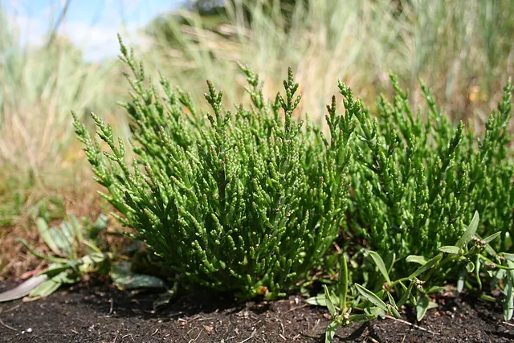

Wild food recipes from Denmark
17 dishes made with foraged ingredients, from drinks and preserves to mains and desserts.
Drinks
 Elderflower cordial (hyldeblomstsaft)Elderflower
Elderflower cordial (hyldeblomstsaft)Elderflower Sea buckthorn juice (havtornsaft)Sea buckthorn
Sea buckthorn juice (havtornsaft)Sea buckthorn Sloe schnapps (slåensnaps)Sloe
Sloe schnapps (slåensnaps)Sloe Woodruff schnapps (skovmærkesnaps)Sweet woodruff
Woodruff schnapps (skovmærkesnaps)Sweet woodruff
Starters & snacks

Mussels in white wine (muslinger)Blue mussels
Fried samphire (kveller)Marsh samphire
Sauces, preserves & sides
 Wild garlic pesto (ramsløgspesto)Wild garlic
Wild garlic pesto (ramsløgspesto)Wild garlic Rose hip jam (hybenmarmelade)Rose hips
Rose hip jam (hybenmarmelade)Rose hips Rowan jelly (rønnebærgelé)Rowan berries
Rowan jelly (rønnebærgelé)Rowan berries- Pickled elderflower capersElderflower
 Nettle soup (brændenældesuppe)Stinging nettle
Nettle soup (brændenældesuppe)Stinging nettle Sea beet with butter and fishSea beet
Sea beet with butter and fishSea beet Hazelnut bread (hasselnødbrød)Hazelnut
Hazelnut bread (hasselnødbrød)Hazelnut Elderberry soup (hyldebærsuppe)Elderberry
Elderberry soup (hyldebærsuppe)Elderberry